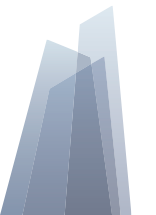

Завод №1
Учасник УЦСБ
Регіон: м. Київ
Адреса потужностей виробництва: 00342, вул. Машинобудівельна 12
Відповідність стандарту на виготовлення : EN 1090-2
Потужність: 250 т/міс
Досвід постачання на експорт : Польща, Угорщина, Австрія
Спеціалізація за видами конструкцій : Рамні та болкові конструкції з прокатних та зварних профілів, Ферми, Мостові конструкції, Антенні споруди, щогли.
Проектнтні роботи: Розробка КМД
Монтажні роботи: : Монтаж металоконструкцій, монтаж огороджувальних конструкцій, генпідряд
Клас виконання за EN1090-2 : EXC2
Максимальна вага відправного елементу : 20 тон
Виконані об'єкти
- ВИРОБНИЧО-СКЛАДСЬКИЙ КОМПЛЕКС З АДМІНІСТРАТИВНО-ПОБУТОВИМИ БУДІВЛЯМИ
- ЦЕХ МОЛОКОЗАВОДУ, ЛЮСТДОРФ ООО
- ТРЦ АШАН
Технологічні можливості
Наявність обладнання для очистки конструкцій до степеню Sa2 1/2 згідно ДСТУ ISO 8501-1
Наявність ділянки нанесення АКЗ з контрольованими кліматичними параметрами
Автоматична лінія складання та зварювання двотаврових балок - 2000 м/міс
Вальцювання листового та профільного прокату
Системи управління виробництвом
Впроваджена система менеджменту якості : ISO 9001:2008
Впроваджені системи управління виробництвом (LEAN, ТОС тощо.) : LEAN
Технології зварювання
Зварювання сталей підвищеної міцності і високоміцних сталей (>C355) та/або спеціальних
Атестація технології зварювання EN ISO 3834-2
Атестація зварювальників
Неруйнівні методи контролю якості зварних з'єднань - Візуальний, UT, RT, LT, MT
Контактна інформація
Телефон: +380 (00) 000-0000
Email: zavod1@gmail.com
Сайт: https://zavod1.com.ua/
Адреса: м.Київ, вул.Машинобудівна, 12